The Design Process


Get inspiration for your designs

Mockup
Now that you have the basis of a useable product, it’s time
to design the interface by adding the visual attributes, colors, icons, shadows, and images, and refining the look and feel.
to design the interface by adding the visual attributes, colors, icons, shadows, and images, and refining the look and feel.
Step 03


Wireframe
A wireframe is, so to speak, the skeleton or rather a static basic structure. It’s where we take the ideas we’ve
gathered from our sketches and make them digital.
In this step, the texts or other design elements should not be filled in at the beginning and rather be hinted at. Once you
are sure that it fits, you can start filling in texts and displaying design elements, but without color or other visual attributes.
Wireframes can be created on digital platforms using tools like Axure, Adobe XD, Sketch, Figma or even Photoshop.
In this step, the texts or other design elements should not be filled in at the beginning and rather be hinted at. Once you
are sure that it fits, you can start filling in texts and displaying design elements, but without color or other visual attributes.
Wireframes can be created on digital platforms using tools like Axure, Adobe XD, Sketch, Figma or even Photoshop.
Step 02
 




Sketch/ Scribble
First start sketching on paper. Here we are unlimited and not easily distracted by complex software and
features. Sketching is an effective way to explore ideas and identify any design problems early on. Sketches
don't have to be pretty, and they shouldn’t be. The idea here is to focus on individual ideas, flows, and
possible layouts, using simple placeholders for images and text. The point is to explore ideas for your final
prototype, so you don’t have to worry about design yet.
Step 01
Prototype/ App
Then, after you’ve gathered feedback and modified your mockups, your app or website is finalized and ready for
implementation.
Step 04

This is when the UI comes into action

This is when the UX comes into action


To create an app or website, it’s best to follow this 4 step principle. Here you will be guided how to approach
the whole process and when UI and UX come into action.